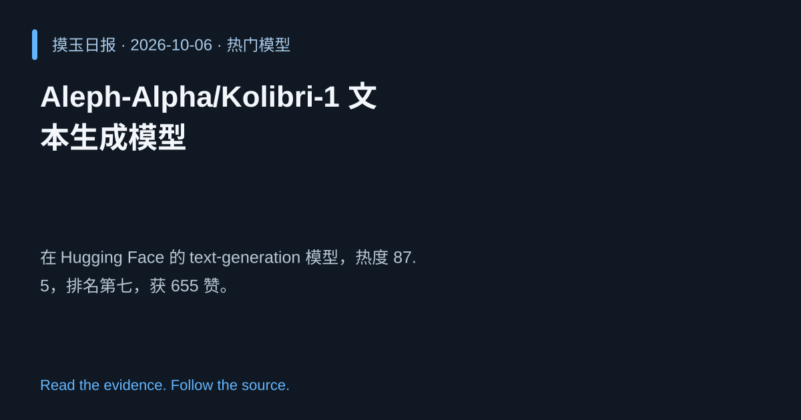

2026-10-06 · Asia/Shanghai · 热门模型 · #7
Aleph‑Alpha/Kolibri‑1 文本生成模型
Aleph-Alpha/Kolibri-1
在 Hugging Face 的 text‑generation 模型，热度 87.5，排名第七，获 655 赞。
为什么值得关注
高质量文本生成仍是核心需求，Kolibri‑1 的受关注度反映其竞争力。
- 专注长文本生成，保持一致性
- 热度 87.5/100，社区点赞 655 次
- 适用于创作与对话系统

热度 87.6 / 100；排名与评分保留该期记录。